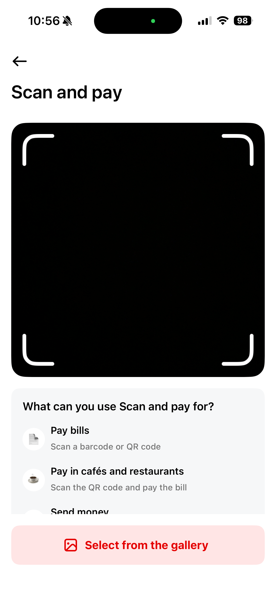
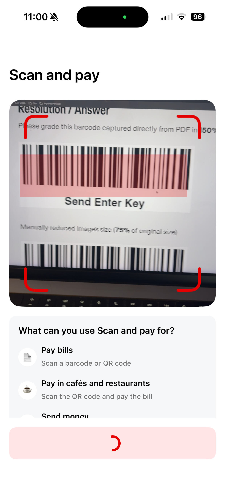
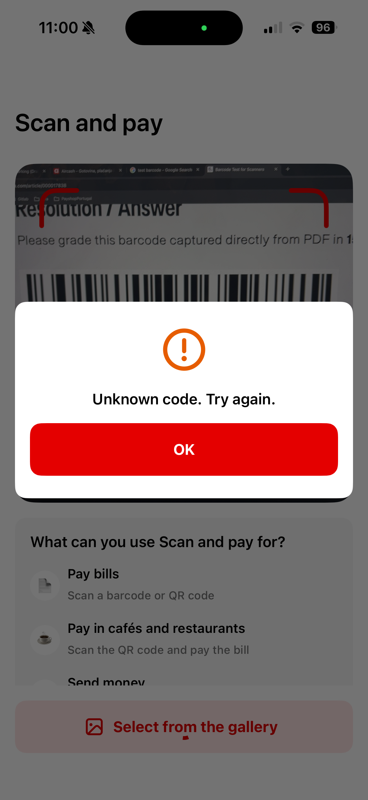
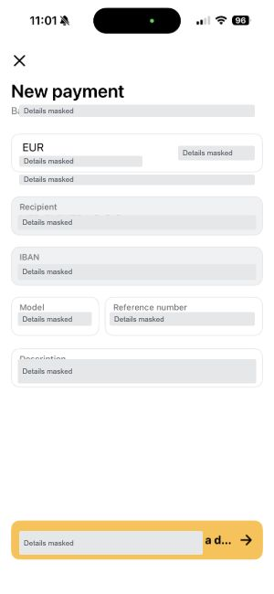
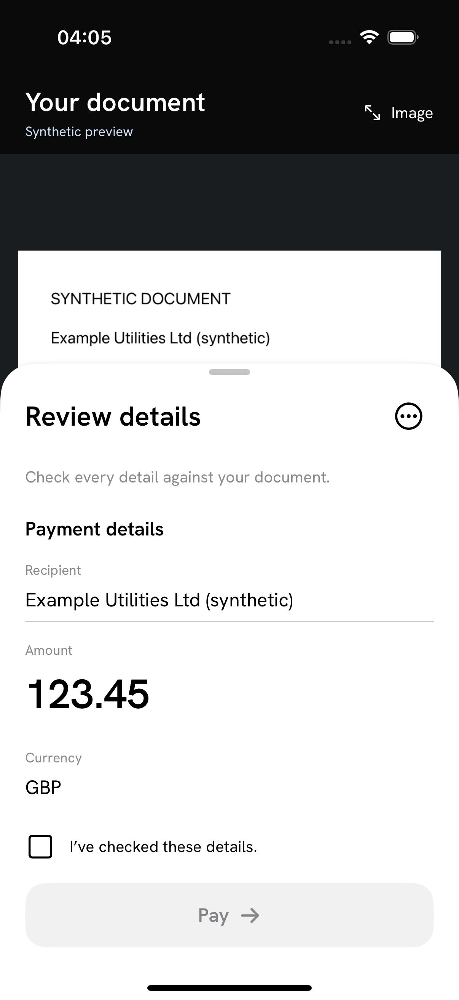
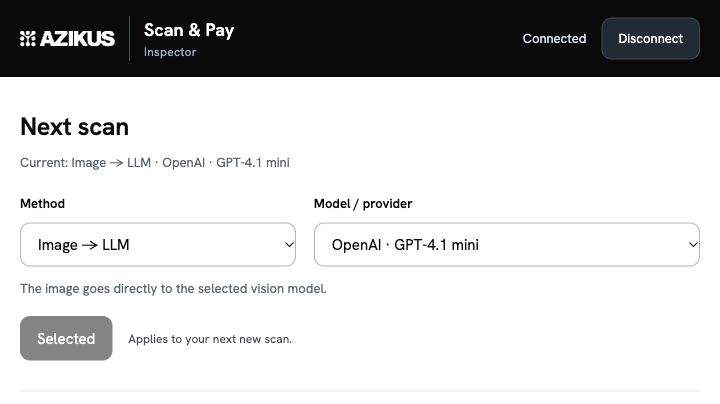
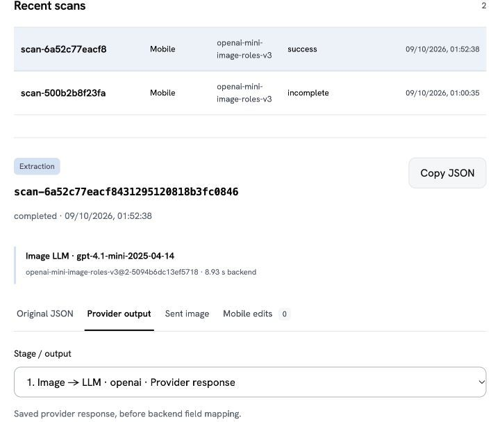

×
Scan and Pay 2.0
An Azikus proof of concept for Aircash
Ivan MarkusiCEO, Azikus
An Azikus proof of concept for Aircash
Live-frame code detection. Platform options: Android · ML Kit; iOS · native AVFoundation.




Scan and Pay 2.0: extend the existing scanner to invoices without a supported code.
markets
downloads
The next iteration can extend the existing frame-based scanner
to documents without a supported payment code.
Invoice image in.
Editable payment draft out.
Read payment and invoice fields from the document.
Review and correct the proposed values.
Test extraction independently of the final capture interaction.
Capture / import → crop → send → review → confirm

Three configurable extraction routes. A common structure for the mobile review.

Choose the approach and model
Inspect each run.
Compare processing stages.
Review the original result and edits.

Image, result, provider output and mobile edits
| Approach | Input and interpretation | Tested services |
|---|---|---|
| Direct image model | Image interpreted by a vision LLM | OpenAI, Gemini, Mistral, Anthropic, Together, xAI |
| OCR with rules | Recognized text parsed by rules | Mistral OCR, Google OCR, Azure Read, AWS Text |
| Invoice extraction API | Document-specific field extraction | Azure Invoice, Google Invoice, AWS Expense, Mindee |
| OCR with annotations | OCR with a requested field schema | Mistral annotations |
| OCR followed by a model | OCR text / layout interpreted by an LLM | Mistral OCR + OpenAI |
Five approaches, tested through different service and model configurations.
APPROACH 01
One model sees the document and returns the requested payment and invoice fields.
Fast results from a single external stage. Incorrect amounts, recipients and references still require review.
OpenAI · Gemini · Mistral · Anthropic · Together · xAI
APPROACH 02
OCR recognizes the text. Deterministic rules locate identifiers and associate them with payment fields.
Text recognition can succeed while payment extraction stays incomplete. Layout and field relationships matter.
Mistral OCR · Google Document AI OCR · Azure Read · AWS Textract Text
APPROACH 03
A document service returns invoice-specific fields such as supplier, total, dates and line items.
Invoice fields do not always match payment intent. Supplier is not necessarily beneficiary; invoice total is not always amount due.
Azure Invoice · Google Document AI Invoice · AWS Textract Expense · Mindee
APPROACH 04
The OCR request includes the structure we want back. The service returns text and schema-guided fields.
One integrated service call, with a separate cost and latency profile from basic OCR.
Mistral OCR annotations
APPROACH 05
OCR separates recognition from interpretation. The model then maps the recognized content to payment fields.
Both stages add latency and cost. In the tested configurations, this did not outperform direct image extraction.
Mistral OCR + OpenAI
17 inputs · 13 with scored fields
All 17 inputs used in the reviewed comparison
BROAD SERVICE STUDY
15 configurations31 images × 3 runs each
1,395 processing runs
DIRECT-MODEL QUALITY STUDY
6 vision models17 images per model
102 readable field checks
63 payment-field checks
98 separate absence checks
Development sample. 13/17 images have scored fields; 146 fields remain excluded. Results describe fields, not whole-invoice success.
The broader processing study: three passes through 31 images
| Configuration | Valid responses | Errors | Median time | p95 time |
|---|---|---|---|---|
| OpenAI GPT-4.1 mini | 92 / 93 | 1 | 4.2 s | 9.0 s |
| Anthropic Haiku 4.5 | 91 / 93 | 2 | 5.7 s | 10.1 s |
| Gemini 3.5 Flash-Lite | 93 / 93 | 0 | 3.1 s | 5.0 s |
| Mistral Small | 87 / 93 | 6 | 3.4 s | 6.2 s |
| xAI Grok 4.7 | 92 / 93 | 1 | 25.5 s | 50.4 s |
| Together Qwen 3.5 9B | 88 / 93 | 5 | 8.8 s | 23.9 s |
Valid response = structurally processable output. This does not measure payment-field correctness. Backend times include failures.
The same processing study, covering the remaining nine configurations
| Configuration | Valid responses | Errors | Median time | p95 time |
|---|---|---|---|---|
| Mistral OCR + rules | 93 / 93 | 0 | 3.0 s | 6.5 s |
| Google OCR + rules | 93 / 93 | 0 | 2.1 s | 2.7 s |
| Azure Read + rules | 93 / 93 | 0 | 6.0 s | 11.2 s |
| AWS Text + rules | 93 / 93 | 0 | 2.5 s | 4.4 s |
| Azure Invoice | 93 / 93 | 0 | 11.1 s | 16.7 s |
| Google Invoice | 93 / 93 | 0 | 4.1 s | 5.3 s |
| AWS Expense | 93 / 93 | 0 | 2.9 s | 4.0 s |
| Mindee Invoice | 93 / 93 | 0 | 5.3 s | 6.6 s |
| Mistral annotations | 91 / 93 | 2 | 11.3 s | 29.7 s |
Structural validity does not establish correct or complete payment details. These services are included in the saved evidence.
Field-level correctness and backend processing time
| Model | Readable fields /102 | Payment fields /63 | Median time | p95 time |
|---|---|---|---|---|
| OpenAI GPT-4.1 mini | 79 | 51 | 4.02 s | 9.43 s |
| Gemini 3.5 Flash-Lite | 80 | 50 | 3.31 s | 5.00 s |
| Together Qwen 3.5 9B | 69 | 47 | 9.41 s | 22.67 s |
| Mistral Small | 71 | 43 | 2.99 s | 5.78 s |
| Anthropic Haiku 4.5 | 65 | 42 | 5.64 s | 11.14 s |
| xAI Grok 4.7 | 16 | 10 | 90.06 s | 90.13 s |
Payment fields
Recipient, amount, currency, bank destination, payment model and reference.
Median / p95
50% / 95% of measured processing times fall at or below these values.
Field counts, not invoice success rates. Times include failures and exclude mobile capture, upload and rendering.
Image-model costs estimated from saved input and output usage
| Model | USD / image | USD / 1,000 images |
|---|---|---|
| Mistral Small | $0.000795 | $0.79 |
| Together Qwen 3.5 9B | $0.001075 | $1.07 |
| OpenAI GPT-4.1 mini | $0.002278 | $2.28 |
| Gemini 3.5 Flash-Lite | $0.002427 | $2.43 |
| Anthropic Haiku 4.5 | $0.007673 | $7.67 |
| xAI Grok 4.7 | Incomplete cost data | Not comparable |
These are image-model inference costs for the tested sample.
The 1,000-image column scales the same sample usage. It is a provider-cost estimate, not a full operating-cost forecast.
Document services use page, document or account-plan pricing
| Service | Pricing unit | USD per unit / cost status |
|---|---|---|
| Mistral OCR | Page | $0.004 |
| AWS Textract Text | Page | $0.0015 |
| AWS Textract Expense | Page | $0.0100 |
| Google Document AI OCR | Page | $0.0015 list rate |
| Google Document AI Invoice | Document, up to 10 pages | $0.10 minimum |
| Azure Read / Invoice | F0 test tier | Exact cost unverified |
| Mindee Invoice | Page | 1 trial credit; cash cost unverified |
| Mistral OCR annotations | OCR + annotation processing | Annotation surcharge unverified |
Different extraction routes, different billing units. OCR followed by an LLM incurs both stages. Rates reflect the saved evaluation basis.
| Configuration | External stages | Payment fields /63 | Median time | p95 time |
|---|---|---|---|---|
| OpenAI direct image | 1 | 51 | 4.02 s | 9.43 s |
| Mistral OCR + OpenAI · draft 1 | 2 | 44 | 6.58 s | 11.14 s |
| Mistral OCR + OpenAI · roles 3 | 2 | 37 | 6.02 s | 8.47 s |
Direct image is the stronger
starting point in these measurements.
Same reviewed fields. Both hybrid stages are included; hybrid batches were run earlier.
WORKING NOW
Mobile input and editable review
Configurable extraction and operational inspection
Traceable source results and user-confirmed values
BEFORE PRODUCTION
Independent invoices across target markets
Quality and end-to-end latency targets
Payment integration, platform coverage and reliability
Direct-image extraction is the best
starting point in the tested configurations.
PROVISIONAL BASELINE
51 / 63 payment fields
4.02 s backend median
CLOSE, FASTER ALTERNATIVE
50 / 63 payment fields
3.31 s backend median
Tested OCR → LLM routes were slower and recovered fewer payment fields.
Provisional choice from this development sample. A one-field gap does not establish a clear model winner.
Select stable preview frames and prepare a draft through backend OCR or a vision model.
Explore one scanning loop that combines ML code detection with direct image interpretation. Feasibility remains uncertain.
Skip duplicates and blur, bound background calls and ignore outdated results.
Define required fields per payment type. Missing, unreadable or conflicting values → request a retake or manual completion.
Research ideas for a future iteration. The combined ML/LLM approach is untested in this PoC.
Keep the existing automatic code detection.
Add extraction for invoices without a supported code.
Validate models and capture strategies across target markets.
Validation with Aircash
and integration planning.
From a real document
to a reviewable draft.
Capture / import → crop → send → review → confirm
Inspect the result, correct a field and confirm the review.
AIRCASH × AZIKUS
Thank you for your trust
and collaboration.